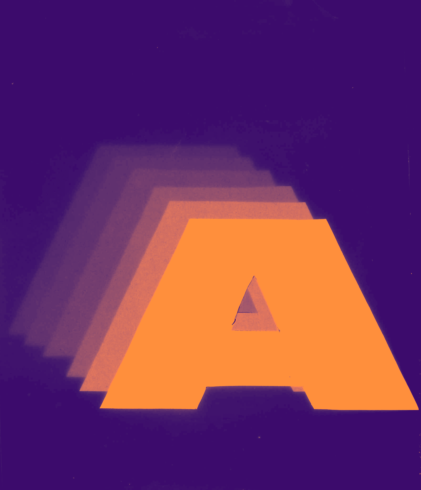
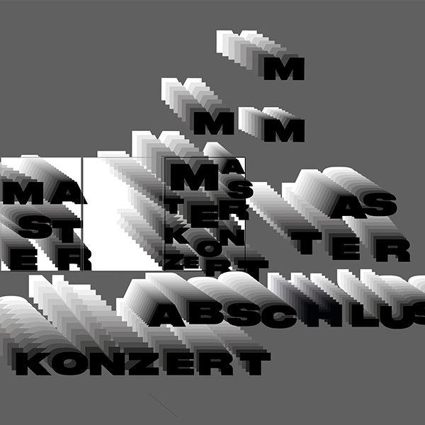

Wie kann man Musik sichtbar machen? Mein Projekt begann mit einfachen Experimenten: analog auf Papier,
digital mit der Kamera, mit Flüssigkeiten und Stop-Motion. Schon bald wurde deutlich, wie eng Musik und
Gestaltung miteinander verbunden sind – beide basieren auf Rhythmus, Tempo und Bewegung. Diese Verbindung
bildet die Grundlage meines Plakats.
Es entstand aus analogen Scans von Transparentpapier, die ich übereinanderlege und digital weiterbearbeite.
Eine kurze Animation ergänzt die Idee der Bewegung. Der Schwarz-Weiss-Look rückt Formen und Prozesse in den
Fokus und zeigt, wie Musik als Bewegung innerhalb eines Bildes erfahrbar werden kann.


